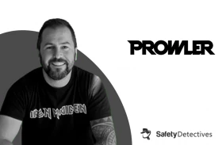

Latest News & Updates
Seamless Security for Every Cloud with Prowler 5
Prowler’s latest version brings groundbreaking features and enhancements. Say Hello to Prowler 5: Secure AWS, Azure, GCP, & Kubernetes with 1,000+ controls & continuous monitoring. See what’s new and improved with Prowler multi-cloud.

Prowler Appoints Former SentinelOne and AWS Executive Rajiv Taori as Chief Operating Officer
Prowler, the leading Open Cloud Security platform, today announced the appointment of Rajiv Taori as its first Chief Operating Officer. Taori brings more than 20 years of experience in building and scaling successful technology businesses, with deep expertise in cybersecurity, cloud services, and enterprise software.

In the Press
May 12, 2025
Prowler Closes $12.5 million Seed Financing To Drive The Future of Open Cloud Security
Prowler raises a total of $12.5M in a $6.5M seed-round extension.

March 19, 2025
The Future is Open – Open Cloud Security is Key in the Race Against Evolving Threats
Cloud threats are evolving fast—closed security models can’t keep up. Open Cloud Security provides transparency, flexibility, and community-driven innovation to stay ahead of attackers. Learn why the future of security is open.

December 17, 2024
Prowler Appoints Former SentinelOne and AWS Executive Rajiv Taori as Chief Operating Officer
Prowler appoints Rajiv Taori, former AWS and SentinelOne executive, as its first COO to drive growth and innovation. With Prowler 5 now securing AWS, Azure, GCP, and Kubernetes, Taori’s leadership strengthens Prowler’s mission to deliver open, transparent cloud security.

November 26, 2024
Interview With Toni de la Fuente – CEO of Prowler
Toni de la Fuente, CEO of Prowler, is revolutionizing cloud security through transparency and community-driven solutions. From launching Prowler as an open-source side project to leading a global platform for cloud security auditing, Toni’s journey is rooted in simplifying complex challenges for organizations. In this SafetyDetectives Q&A, Toni shares Prowler’s unique approach to securing multi-cloud environments, the future of cloud security, and practical advice for organizations transitioning to the cloud.

November 22, 2024
Securing Your AWS Environment with Prowler: What’s New and How to Use It
Shannon Brazil, host of AWS The Safe Room Podcast interviews Toni de la Fuente for best practices and tips for using Prowler to secure your AWS environments.

September 26, 2024
The Future of Open Cloud Security with Prowler
Chloe the host of Cyber in the Clouds Podcast is joined by Toni de la Fuente, Creator & CEO of Prowler. Together, they discuss what makes Prowler different to other solutions, customer feedback & innovation, as well as the future of the open source cloud industry.

August 29, 2024
Webinar: Reducing the Noise in Cloud Security
Toni de la Fuente joins the team at HanaByte for an informative webinar on Prowler to increase cloud security, including using mute lists.
Panelists for this webinar:
• Toni de la Fuente, CEO of Prowler
• Michael Greenlaw, Senior Security Consultant at HanaByte
• Patrick Davis, Principal Security Consultant at HanaByte

April 27, 2023
Prowler: An Overview and Its Impact
Gain insights into Prowler’s features and its impact on cloud security. This comprehensive overview by Travis Felder sheds light on how Prowler stands out in the security landscape.

April 26, 2023
ProwlerPro Joins The AWS Amazon Partner Network
We are excited to announce that ProwlerPro has joined the AWS Amazon Partner Network, a testament to our growing influence and commitment to cloud security.

October 26, 2022
Prowler Recognized in ‘Infosec Products of the Month’
Prowler has been highlighted as one of the top Infosec Products for October 2022. Discover why our solution is gaining recognition in the cybersecurity community.

Community Spotlight
Media kit
Download our press kit for detailed information about Prowler, including logos, product screenshots, and executive bios.

Connect with us
For media inquiries, please contact Laura Franzese